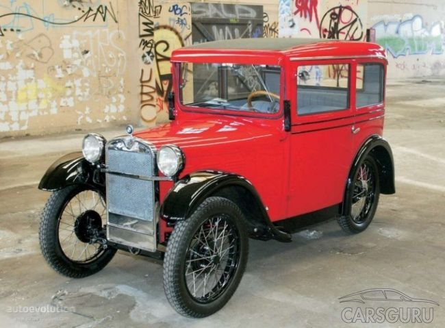
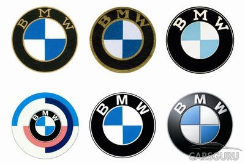

Первый собственный автомобиль-Первый собственный автомобиль BMW выпускает 1 апреля 1932 года. BMW 3/15 PS был создан на основе идей одного из популярнейших в то время автомобилей Austin 7 (или, как он назывался в Германии, Dixi). Мощность мотора составляла всего 20 л. с., а максимальная скорость – 80 км/ч. Однако уже тогда автомобиль оснащался четырехступенчатой коробкой передач, которую никто не мог предложить еще два года.Первое падение-Деятельность BMW сильно пострадала после Первой мировой войны. По Версальскому договору немцам запретили производить двигатели для самолетов, что и было основным видом деятельности баварской компании. Карл Рапп и Густав Отто в спешном порядке перепрофилируют завод на выпуск мотоциклетных двигателей и мотоциклов. И уже в 1923 году на свет появляется первая модель BMW R32, которая некоторое время спустя становится лучшей на многих международных мотогонках.Второе падениеНе успел BMW насладиться успехом – грянула Вторая мировая. Война нанесла серьезный ущерб всей экономике Германии, но больше всего пострадала промышленность. А из всех немецких производителей больше всех завис над пропастью именно BMW. Союзники разбомбили завод в Мильбертшофене, а второй, в Айзенахе, оказался на территории, контролируемой СССР. Все сохранившееся оборудование было вывезено оттуда в Советский союз. Баварцам пришлось возвращаться к истокам и начинать все сначала.
